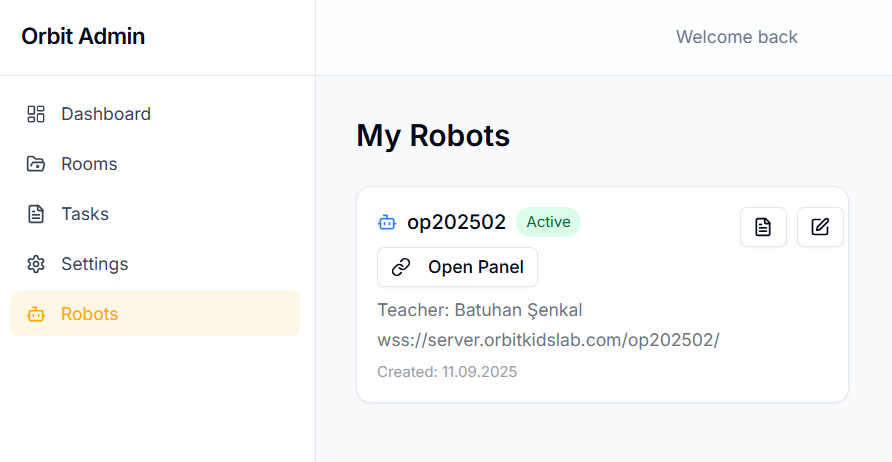

Temel seviye
Başlangıç
Sistem Gereksinimleri
Herhangi bir pakete veya indirme aracına gereksinim yoktur. Bir adet tarayıcı ve internet bağlantısı yeterlidir.
Kayıt Olma
Öğretmen Kaydı
Öğretmen olarak kayıt olmak için bir adet e-mail ve şifre girilmesi gerekir.
Öğrenci Kaydı
Öğrenci kaydı, öğretmen tarafından verilen oda numarası (ROOM CODE) ile giriş yaptıktan sonra, öğrencinin ismi NICKNAME olarak girilerek oluşturulur.
Öğretmen Paneli
Rooms
Odalar Basic ve Medium olmak üzere iki kategoriye ayrılmaktadır.
DİKKAT
Oluşturma sürecinde her iki kategori için de aynı adımlar uygulanır; söz konusu ayrım, basic odada basic görev, medium odada medium görev tanımlanmasıyla görevlerin sistemde seviyelerine göre sınıflandırılmasına yöneliktir.
Basic Task Oluşturma
Medium Task Oluşturma
Basic Task'in Robot Üzerinde Çalıştırılması
Medium Task'in Robot Üzerinde Çalıştırılması
Robots

Admin tarafından eklenen öğretmenin çalıştığı robotun görüntülendiği sayfadır. Open Panel ile kontrol paneline bağlanılır.
Öğrenci Paneli
Basit Görevin Kodlanması
İKONLAR
| İKON | İSİM | GÖREV |
|---|---|---|
| Yeşil Bayrak | Programı başlatmak için kullanılır. | |
| Kırmızı Bayrak | Programı durdurmak için kullanılır. | |
| İleri | Robotu bir adım ileri götürür. | |
| Sağa Dönüş | Robotu sağa döndürür. | |
| Sola Dönüş | Robotu sola döndürür. | |
| Döngü | İçine yazılan komutları tekrar tekrar çalıştırmayı sağlar. | |
| Sıcaklık Ölçümü | Ortam sıcaklığını ölçer. | |
| Ses Kaydı | Öğrencinin mikrofon aracılığıyla ses kaydetmesini sağlar. |